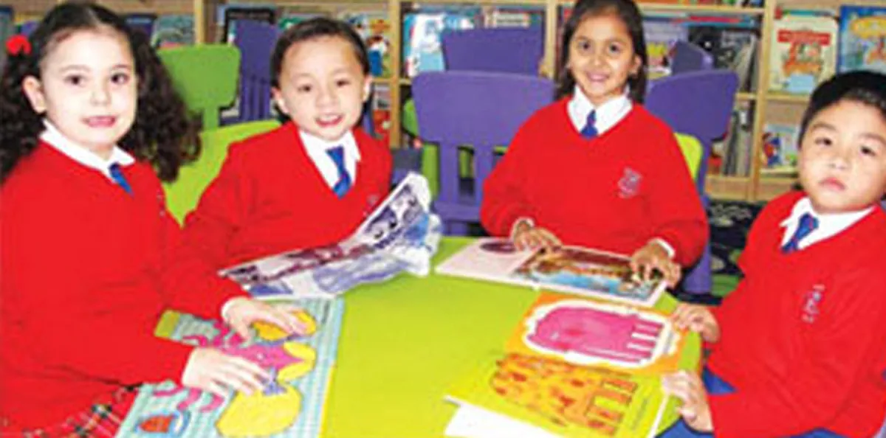
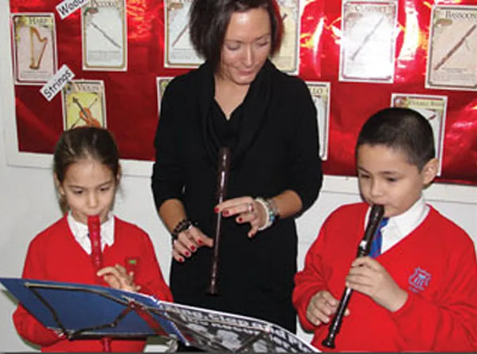
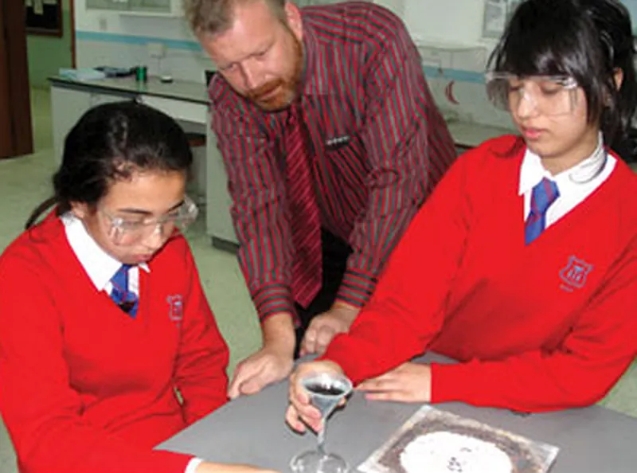
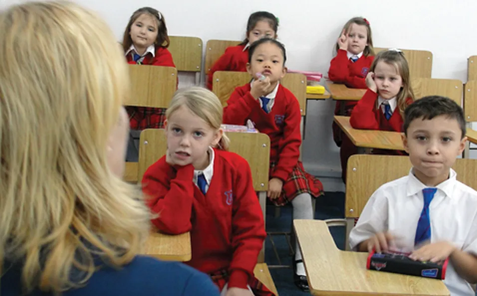
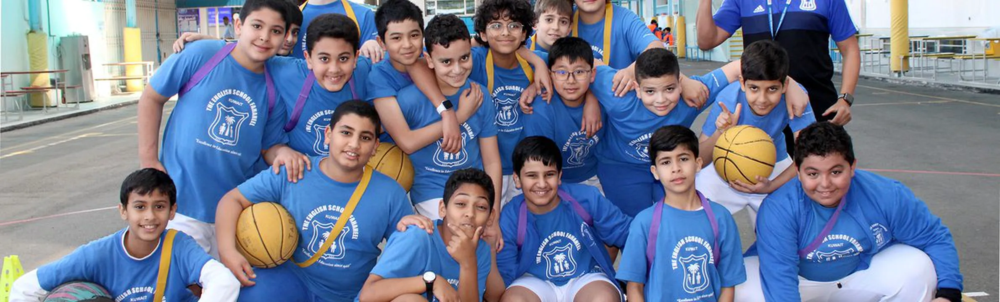

المناهج
نتبع المنهج الوطني لإنجلترا وويلز، من المرحلة التأسيسية مروراً بالمراحل الأساسية من الأولى إلى الرابعة، وصولاً إلى مستوى AS و A Level في الصفين الثاني عشر والثالث عشر، مع ما تشترطه وزارة التربية الكويتية في اللغة العربية والتربية الإسلامية.
يدرّس معلمون متخصصون كثيراً من المواد منذ الصف الأول، منها التربية البدنية والحاسوب والموسيقى والفرنسية والفنون. وجميع المعلمين معتمدون من وزارة التربية للمراحل التي يدرّسونها.
01المرحلة الدنياالروضة وصف الاستقبال، وفق منهج المرحلة التأسيسية البريطاني.
فصول واسعة ومحفّزة متصلة بمناطق لعب داخلية وخارجية كبيرة وآمنة: أربع غرف للروضة وأربع لصف الاستقبال. نشجّع الاستقلالية، ويتقدم كل طفل في:
- التواصل واللغة والقراءة والكتابة
- الرياضيات
- النمو البدني
- النمو الشخصي والاجتماعي
- معرفة العالم وفهمه
- النمو الإبداعي
وفي نهاية صف الاستقبال يؤدي الأطفال اختبارات NFER في القراءة والحساب.

02المرحلة المتوسطةمن الصف الثالث إلى السادس، وفق المنهج الوطني لإنجلترا.
التركيز على المواد الأساسية: القراءة والكتابة (خاصة المحادثة والاستماع)، والحساب، والعلوم، مع دعم لمن يتعلمون الإنجليزية لغةً ثانية. وفي الصفين الخامس والسادس يُوزَّع الأطفال حسب المستوى في القراءة والحساب.
- التاريخ والجغرافيا والفنون
- الحاسوب بمعلمين متخصصين
- العربية للعرب وغير العرب
- التربية الإسلامية للمسلمين
- الفرنسية في الصفوف 4 و5 و6
- التربية البدنية والموسيقى
اليوم الدراسي 8 حصص مدة كل منها 40 دقيقة، مع استراحتين من 15 دقيقة عند 9:30 و11:45. واجبات مكتوبة يومياً، واختبارات في ديسمبر ومايو، وتقرير كل فصل، ويوم مفتوح للأهل كل فصل.

03المرحلة العلياIGCSE و A Level عبر كامبريدج الدولية.
يلتحق الطلاب بالمرحلة العليا من عمر 11 سنة بعد اختبار قبول ومقابلة. ومن الصف التاسع إلى الحادي عشر يدرسون حتى 10 مواد IGCSE في برامج مدتها سنة أو سنتان، ويؤدون الامتحانات في الصفين العاشر والحادي عشر.
- حتى 10 مواد IGCSE
- أوراق Core أو Extended
- A/S Level ممكن في مايو/يونيو من الصف 11
- بدء مادتين أو ثلاث من A Level في الصف 11
- تُصحَّح الأوراق في المملكة المتحدة
- كامبريدج الدولية وإديكسل
لقائمة المواد كاملة يُرجى التواصل مع مدير المرحلة العليا.

04مركز السادس الثانويالصفان الثاني عشر والثالث عشر، استعداداً للجامعة.
مساحة دراسة خاصة بطلاب الصفين 12 و13، فيها إنترنت لاسلكي وأجهزة حاسوب. يضع الطلاب قواعد استخدامها بأنفسهم، ويتعلمون تنظيم وقتهم كما سيحتاجون في الجامعة.
معظم الجامعات، وخاصة كليات الطب والهندسة، تطلب نتائج أعلى من IGCSE. وتُحتسب A/S Level نصف A Level في الجامعات حول العالم.

05اللغة العربية والتربية الإسلاميةوفق منهج وزارة التربية الكويتية.
تُدرَّس للعرب وغير العرب في فصول منفصلة، حسب لوائح إدارة التعليم الخاص. ويُقدَّم دعم إضافي عند الحاجة بخطة يضعها المدير ورئيس قسم العربية والتربية الإسلامية بالتشاور مع ولي الأمر.
- امتحان الثانوية العامة الكويتي
- IGCSE اللغة العربية لغةً أولى

06الأندية والأنشطةيشرف عليها معلمونا خلال اليوم الدراسي وبعده.
- كرة القدم تحت 14 وتحت 16 سنة
- كرة القدم للبنات تحت 16 سنة
- الكرة الطائرة وتنس الطاولة
- السباحة للبنات وللبنين
- الكاراتيه والريشة الطائرة
- الكورال وفرقة المدرسة
- الرسم والخزف
- المناظرة والشطرنج
تُوزَّع الاستمارات في بداية كل فصل، والمقاعد بالأولوية لمن يسجّل أولاً. ويشارك الطلاب في أنشطة بين المدارس عبر KFSAC و ISACK.

07الصحة والزي المدرسيما يسأل عنه الأهل عادةً.
ممرضة المدرسة. ممرضة مؤهلة بدوام كامل في عيادة الطابق الأرضي، تبقى حتى يغادر آخر طالب. وتحتفظ بسجل صحي لكل طالب مع فحوص دورية وفق لوائح وزارة الصحة.
الزي المدرسي. إلزامي، مستورد من المملكة المتحدة، ويُباع في محل الزي المقابل لمكتب الصندوق.
التسجيل مفتوح للعام 2026–2027
الروضة بمقابلة، والابتدائي باختبار كتابي ومقابلة، والثانوي باختبار قبول ومقابلة.